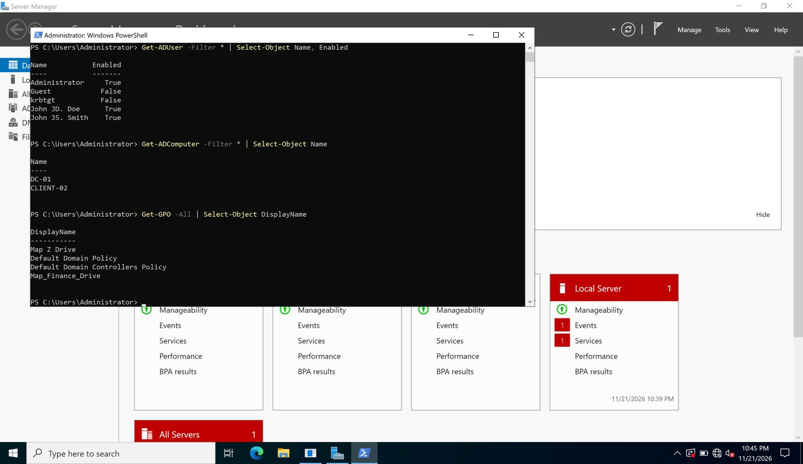
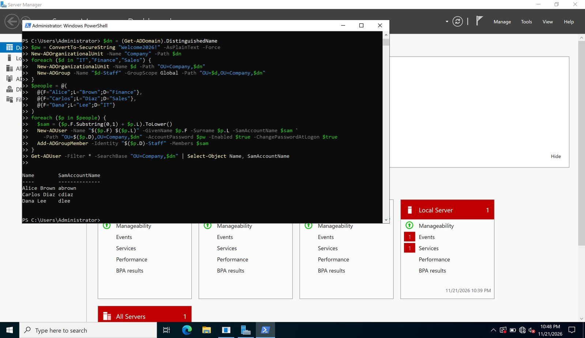
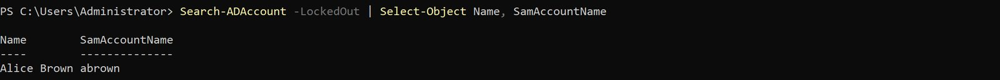
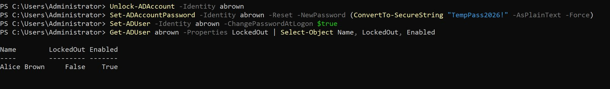
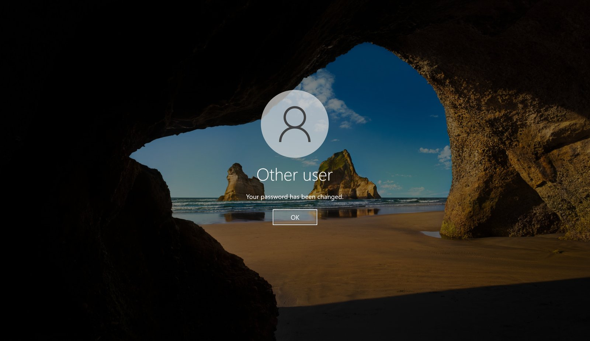

#005
Finance user locked out and forgot her password
ResolvedDateNov 21, 2026
SystemWindows Server 2022 domain (DC-01 + Client-02)
CategoryActive Directory · Accounts · PowerShell
Help usedGuided by AI tutor
"This is Alice in Finance. I can't sign in. It says my account is locked, and I don't remember my password anymore."
Setup
- Organized the domain like a small company: a
CompanyOU with IT, Finance and Sales OUs, one security group per department, and three new-hire accounts created with PowerShell (temporary password, must change at first sign-in). - Turned on an account lockout policy: 5 failed attempts locks the account for 30 minutes.
- Reproduced the problem as the user: 6 wrong passwords on Client-02 gave "The referenced account is currently locked out".
Investigation
- Verified the caller's identity before touching the account (standard service desk practice).
- Found the locked account on the domain controller with
Search-ADAccount -LockedOut: Alice Brown (abrown).
Fix
- Unlocked it:
Unlock-ADAccount -Identity abrown. - Set a temporary password with
Set-ADAccountPassword -Reset. - Required a new password at next sign-in:
Set-ADUser -ChangePasswordAtLogon $true, so only the user knows her final password.
Verified
Get-ADUser showed LockedOut False and Enabled True. The user then signed in on Client-02 with the temporary password, chose her own, and got "Your password has been changed".





What I told the user
"You're unlocked. After too many wrong tries, the account locks itself for security, so nobody can keep guessing your password. I've given you a temporary password. When you sign in, Windows will ask you to pick a new one that only you know. If it happens again, call us and we'll sort it out right away."